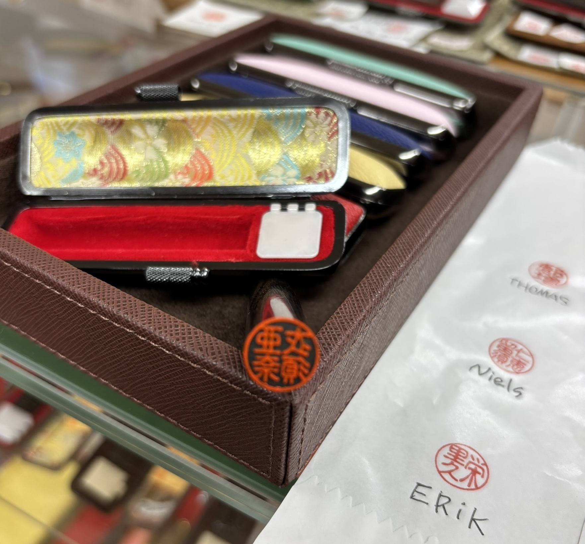

Your Name, Your Hanko
A personalized hanko, crafted in Hida Takayama since 1914
What is Hanko?

What is personalized Hanko?
A personalized Hanko is a traditional Japanese seal with your own name written in Japanese characters. A personalized Hanko can turn your own name into a meaningful souvenir connected to Japanese language and culture.

Your name in Japanese
Foreign names are usually written in Katakana. For a personalized hanko, Kanji can also be chosen based on the sound of the name. Since each Kanji has its own meaning, it can add a more personal meaning to the name.